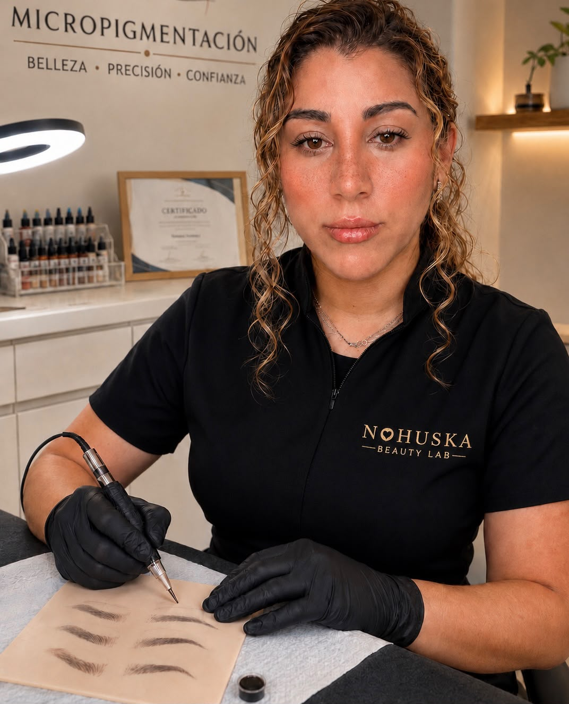

Belleza natural · Granollers
Micropigmentación en Granollers
Técnicas personalizadas para realzar cejas, labios y rostro respetando tus facciones. En Nohuska cada tratamiento comienza con un diagnóstico, un diseño previo y una recomendación honesta.
Reservar valoración gratuita
Diseño personalizadoAdaptado a tus rasgos
Acabado naturalTécnica y pigmento elegidos para ti
Valoración gratuitaSin compromiso y con cita previa
Especialidades
La técnica correcta empieza por entenderte.
Trabajamos micropigmentación de cejas, labios, pecas hiperrealistas, Blush, Facial Contouring y soluciones capilares. La elección depende de tu piel, tus objetivos y el resultado que quieras conseguir.
¿Qué técnica encaja contigo?
Te lo explicamos en una valoración profesional gratuita.
Consultar por WhatsApp